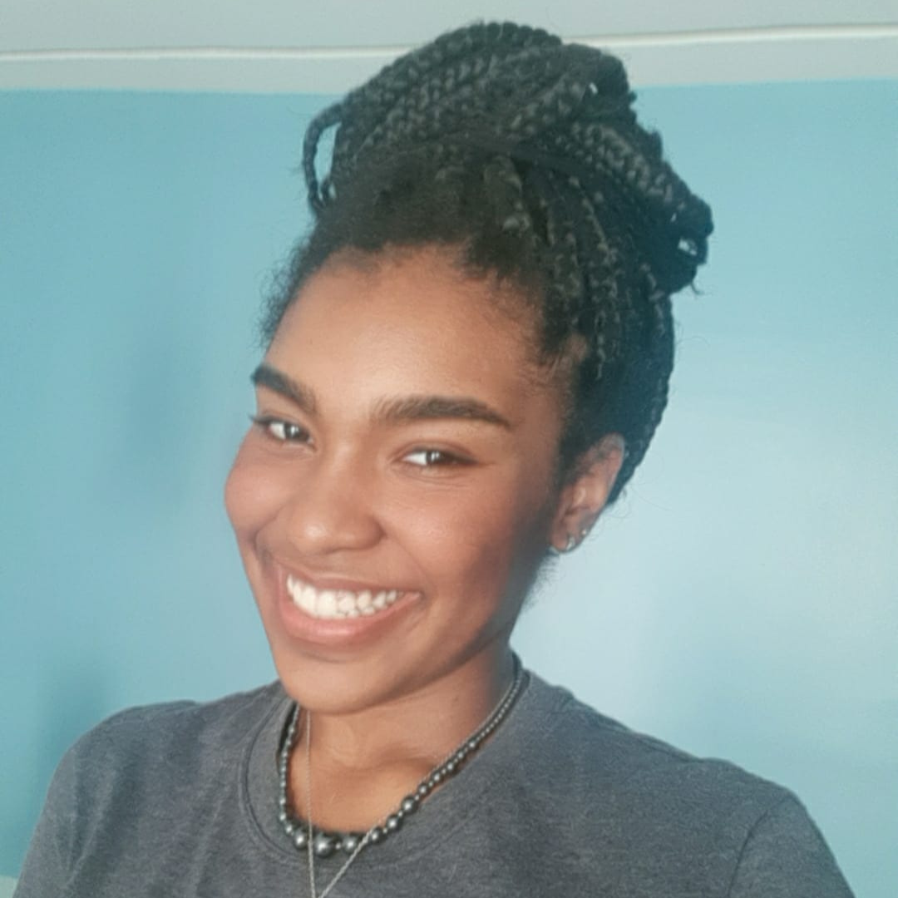

Iara Teixeira
Designer Gráfica
Oi, me chamo iara :)
Sou de São Luís-MA, tenho 22 anos e sou formada e trabalho com design gráfico. Atualmente atuo como Designer Gráfica Jr. na ASEc+ Brasil, e como bolsista de Inovação em Design no Instituto Federal de Ciência e Tecnologia do Maranhão (IFMA). Estou sempre motivada em somar meus conhecimentos de design com tecnologia, por isso também estou estudando desenvolvimento front-end e fazendo pós-graduação em UX Design.